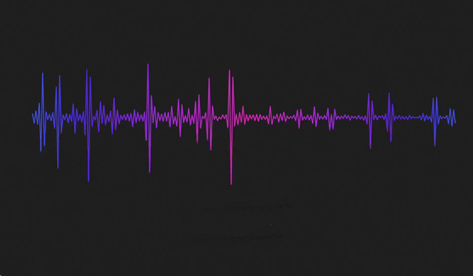

<h2 style="color:red; margin-left:60px">SONGS</h2>



        <audio id="myAudio">
                <source src="song.mp3" type="audio/mpeg">
        </audio>
        <audio id="myAudio2">
                <source src="song2.mp3" type="audio/mpeg">
        </audio>
            <div id="full" style="width: 90%;height: 20%;margin-top: 54px;">
              <div id="previous"><i class="fa fa-step-backward" aria-hidden="true" onclick="prevAudio()" style="margin-top: 4px;"></i></div>
                <div id="main" style="margin-top: -5%; margin-left: 93px;">
                   <div id="pauses" style="visibility: hidden;"><i class="fa fa-pause"  aria-hidden="true" onclick="pauseAudio()" ></i></div>
                   <div id="plays"> <i class="fa fa-play" class="current" aria-hidden="true" onclick="playAudio()"></i></div>
               </div>
             <div id="next"><i class="fa fa-step-forward" aria-hidden="true"style="margin-top: -1.5%;right:37%;position:absolute;"></i></div>
           </div>
